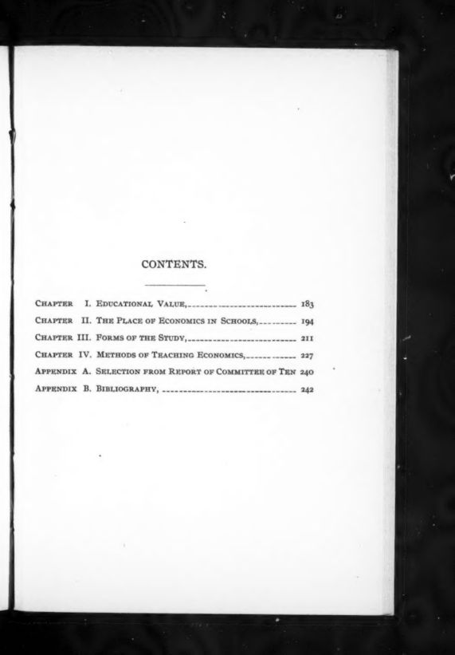

Clow, 1899: por que ensinar economia no colégio
Leitura: 11 min
Frederick R. Clow, professor de escola normal, defende a economia no ensino secundário com dados de um questionário a escolas e propõe como ensiná-la: tópicos, problemas e fatos.


O moldador de ferro se pergunta, no meio do trabalho, por que seu salário é tão baixo. A assalariada se pergunta por que ganha menos que os homens. O morador da cidade, ao pagar o aluguel, amaldiçoa a ganância do senhorio. O agricultor que recebe pouco pela colheita culpa as ferrovias, Wall Street, o presidente ou a Câmara dos Lordes. Para todos eles, escreve Frederick R. Clow, a economia daria uma resposta; sem ela, olham os fenômenos econômicos como o selvagem olha a tempestade, como obra de espíritos maus.
Economics as a School Study é o nº 3 do quarto volume dos Economic Studies, de junho de 1899. Clow ensinava na escola normal estadual de Oshkosh, no Wisconsin, e assina o prefácio em maio de 1898. Conta com dois anos como instrutor de turmas iniciais de economia numa universidade e três numa escola normal. Na primavera de 1897 enviou uma carta-circular a mais de duzentas instituições, entre faculdades médias, escolas normais públicas e high schools das cidades maiores. Frank H. Dixon, então no Dartmouth College, cedeu-lhe material semelhante, colhido em escolas que preparavam alunos para a Universidade de Michigan, e permitiu que fosse usado para contestar suas próprias conclusões.
A economia disciplina a mente?
O questionário perguntava se a economia política é uma disciplina formadora. Vieram 43 respostas: cinco negativas, quatro que destacavam o valor ético e 34 que lhe davam alto valor para a disciplina mental. Clow mesmo adverte que quase todas vinham de quem ensinava a matéria, e que só um quinto dos consultados respondeu. Um professor eminente chamou o estudo de “antidisciplinar”; outros falaram em “nada melhor” e “igual à filosofia”.
O argumento central do autor parte de Simon N. Patten, para quem uma ciência tem o maior valor formativo quando está na transição do estágio indutivo para o dedutivo, como a economia política. Clow acrescenta o que o aluno traz para a sala. Em latim, química ou geometria ele começa do zero. Em economia, chega com preconceitos, interesses de classe e uma terminologia de balcão, ambígua e desajeitada.
“Sua mente não é de modo algum uma folha em branco, mas antes um caos.” (his mind is in no sense a blank, but rather a chaos)
A tarefa, portanto, é organizar o que ele já sabe: descobrir que fatos em que apoiava sua fé política estavam errados, que uma divergência era só de palavras, que é preciso separar o que é do que deveria ser. Clow cita Simon Newcomb: a imprensa espalhou informação, mas nada fez pela análise cuidadosa. Quanto ao valor ético, a economia ensinaria o princípio dos valores relativos, que Carlyle e Ruskin desprezaram como hábito calculista, e, segundo Richard T. Ely, uma religião prática de todos os dias. À objeção de que a ciência estava desarrumada, responde que as divergências deixaram intactos os fundamentos: a teoria austríaca do valor apenas olha as coisas pela outra ponta, e a maior universidade do país usava Mill, sem cortes nem notas, como livro-texto.
“Deveria ser tão sabido que as importações pagam as exportações” (It should be as commonly known that imports pay for exports)
A frase continua: tanto quanto se sabe que a Terra gira em torno do Sol. Para o autor, a escola deveria fazer pelo mundo dos negócios o que já fazia pelo mundo da natureza: difundir os resultados maduros dos especialistas.
Onde a matéria já estava nas escolas?
As respostas desenharam três grupos de estados. No Grupo I, a Nova Inglaterra, Nova York, Pensilvânia e Nova Jersey, a tendência era deixar a economia para as faculdades, e as escolas normais que responderam a omitiam. No Grupo II, os estados centrais com Missouri e Colorado, a economia costumava ser ensinada nas melhores high schools e escolas normais. No Grupo III, os antigos estados escravistas, exceto o Missouri, e o extremo Oeste, não havia costume firmado. Entre as cidades cujas high schools responderam não, havia uma de 163.000 habitantes em 1890, o que mostraria que a exclusão não se devia à fraqueza das escolas.
Outros dados apontavam a mesma direção. Na Dakota do Norte, a matéria constava do currículo prescrito pela junta estadual; no Wisconsin, todas as sete escolas normais estaduais a ofereciam; em Iowa, professores precisavam passar num exame de economia para obter certificados. Dixon recebera 63 respostas de high schools de estados do Grupo II, e 40 ensinavam economia política como matéria separada. Em Minnesota, o inspetor contou 182 alunos em 1894-95 e 255 em 1895-96. O relatório da Conferência do Comitê dos Dez dizia que a matéria aparecia em cerca de um vigésimo das high schools; Clow atribui a diferença às muitas escolas puramente preparatórias incluídas na contagem.
Os alunos dão conta, e os professores?
Clow põe três condições: equipamento, capacidade dos alunos e preparo dos professores. O equipamento não seria problema: com um livro-texto e publicações oficiais gratuitas, cerca de metade do trabalho de biblioteca caberia em 10 dólares de livros. Contra a capacidade dos alunos, cita o presidente Capen, do Tufts College, que duvidava que mentes imaturas alcançassem as distinções necessárias. A favor, J. W. Jenks e C. J. Bullock, de Cornell, este com experiência própria em high school.
O ponto fraco eram os professores. Taussig, de Harvard, escreveu que, ensinada por qualquer um, a matéria seria pior que inútil. Das respostas de escolas normais e high schools, Clow conclui que, de trinta professores, vinte não tinham a formação acadêmica exigida, nenhum era doutor e só quatro se dedicavam a economia e matérias afins. Um amigo recém-doutorado ouviu de uma agência de empregos que o título não o ajudaria em nada a conseguir vaga numa high school.
A recomendação da Conferência do Comitê dos Dez era não dar instrução formal em economia política e ensinar seus princípios junto com a história dos Estados Unidos, o governo civil e a geografia comercial. Clow lembra que ela tinha três professores de história, além do presidente Adams, dois especialistas em governo, Jesse Macy e Woodrow Wilson, três diretores de escola e um único economista, o professor Scott, do Wisconsin. Diz que não põe em dúvida a capacidade nem a integridade dos membros, apenas que seus interesses estavam em outra direção. Sobre os professores de história, a mesma Conferência escrevera que depender de quem não tinha formação na matéria seria tão sensato quanto empregar um surdo-mudo para ensinar leitura ou pedir a um cherokee que ensinasse latim. Entre diretores consultados por Dixon, 19 rejeitaram trocar a economia pela história industrial e 11 aceitaram; entre professores universitários, 23 eram a favor da matéria na high school e 11 contra.
“O ensino da economia política formal nas escolas secundárias é insatisfatório e insensato.” (the teaching of formal political economy in the secondary schools is unsatisfactory and unwise.)
A frase abria a circular de Dixon e provocou respostas contrárias; um correspondente, que acompanhava as reuniões de professores do Illinois, achou a premissa “espantosa”. A conclusão de Clow é que o valor educacional pode ser alcançado e que a tendência de levar a economia à high school deve ser estimulada. Sugere que os diretores procurem professores diretamente nas grandes universidades, cheias de jovens capazes, homens e mulheres, sem emprego ou ensinando outras matérias.
Em que momento e para quem?
A economia deveria vir no fim da vida escolar, quando a maturidade pesa mais, e ser optativa, por causa da enorme desigualdade de aptidão entre os alunos. Pesam a familiaridade com negócios, a família que discute o orçamento doméstico e, acima de tudo, o feitio da mente. Clow registra também uma diferença entre os sexos com as notas de economia de três anos na escola normal de Oshkosh, onde a matéria era obrigatória e a nota mínima era 75.
Teoria, história ou problemas do dia?
O método dominante, segundo o relatório do Comitê, era a recitação rotineira do livro-texto, e os termos ficavam abstrações sem conteúdo. Clow quer o concreto: o que o aluno já sabe de salários, preços e lojas. Se João não entende que uma mudança de preço move a demanda em sentido inverso, basta perguntar-lhe o que faria se subisse o preço dos livros ou das passagens de trem. Elogia as perguntas do livro de Davenport, mas aponta o risco da teoria pura: o jovem economista toma princípios hipotéticos por regras de conduta e ganha o apelido de doutrinário.
Discute as propostas de começar pela história econômica, como fazia o livro menor de Ely, e a de Dixon, de substituir a economia formal por um curso de história econômica inglesa e americana. Usar a história como cavalo de batalha para ensinar princípios, diz, dificilmente pode ser levado a sério; a história industrial pura tem alto valor, mas, adotada no lugar da ciência, promove o empirismo. Considera prematuro trocar a economia pela sociologia, ciência que, a seu ver, só começou com Herbert Spencer. Em todos os casos, princípios, fatos e ideais devem ficar separados na cabeça do aluno; a mistura de ciência e moral seria o defeito da maioria dos livros-texto.
Como dar a aula?
Clow começou pelo método do livro-texto e passou ao método tópico, em que o aluno estuda um tema em várias fontes. Cerca de um quinto das escolas o usava; cinco sextos dos alunos que o experimentaram com ele o preferiram. Contra a aula expositiva cita Laughlin, para quem ela produz homens presunçosos incapazes de uma discussão econômica racional. Desconfia dos debates, que viram disputas partidárias, e recomenda exercícios escritos curtos, sem aviso. Um dos favoritos: transformar uma coluna de números do Statistical Abstract, como a produção de trigo desde 1873, num parágrafo de bom inglês.
Leva à sala uma balança de farmácia: um dólar de prata num prato e 16 dólares em ouro no outro ilustram o “16 para 1”. Sobre a teoria do valor marginal, que levara Marshall e Hadley a abandonar a divisão antiga entre produção, troca e distribuição, prefere a via de Ely e Bullock de pôr vinho novo em odres velhos. Para o último ano do secundário, propõe quinze semanas de educação cívica, quinze de economia e dez de história econômica e política. Os apêndices trazem trecho do relatório da Conferência e uma bibliografia comentada de livros-texto, em que, por exemplo, o de Bowen é descrito como protecionista e o de Bullock como excelente.
Na minha leitura
Na minha leitura, o melhor do estudo é o diagnóstico de método. Clow percebe que a economia é a única matéria em que o aluno chega com crenças, interesses e vocabulário próprios, e que o trabalho do professor é reorganizar essa experiência, separando o positivo do normativo. A regra de manter princípios, fatos e ideais em compartimentos distintos é a mesma que ainda organiza os bons cursos introdutórios.
Também é digno de nota o cuidado com os próprios dados: ele avisa que suas respostas vêm de quem já acreditava na matéria e que a amostra é pequena. É o viés de seleção apontado pelo próprio pesquisador, e ele ajusta suas conclusões a isso.
Glossário
- Escola normal
- instituição pública de formação de professores do ensino primário e secundário.
- High school
- escola secundária pública americana, equivalente ao ensino médio.
- Comitê dos Dez
- comissão da National Education Association que, em 1892-93, propôs diretrizes para o currículo secundário americano.
- Método tópico
- ensino por temas pesquisados em várias fontes, em vez da recitação de um único livro-texto.
- História industrial
- história econômica centrada na organização da produção, do comércio e do trabalho.
- Valor marginal
- princípio de que o valor de um bem depende da utilidade da última unidade disponível.
Fontes
- Chapter I. Educational Value (pp. 183–193). Internet Archive (número completo, PDF)
- Chapter II. The Place of Economics in Schools (pp. 194–210). Internet Archive (número completo, PDF)
- Chapter III. Forms of the Study (pp. 211–226). Internet Archive (número completo, PDF)
- Chapter IV. Methods of Teaching Economics (pp. 227–239). Internet Archive (número completo, PDF)
- Appendix A. Selection from Report of Committee of Ten (pp. 240–241). Internet Archive (número completo, PDF)
- Appendix B. Bibliography (pp. 242–245). Internet Archive (número completo, PDF)
- Número completo digitalizado (domínio público): Internet Archive.
Documento em domínio público (EUA, publicado antes de 1931), via JSTOR Early Journal Content e Internet Archive. Resumo e comentário do autor deste site, sem afiliação com a American Economic Association. Encontrou um erro? Escreva: a correção é publicada no próprio texto, com data.
← ES 22 · Manual de 1899 e a reunião de New Haven: capital, cidades e moeda ES 24 · Hill, 1899: como a Inglaterra cobrava o imposto de renda →